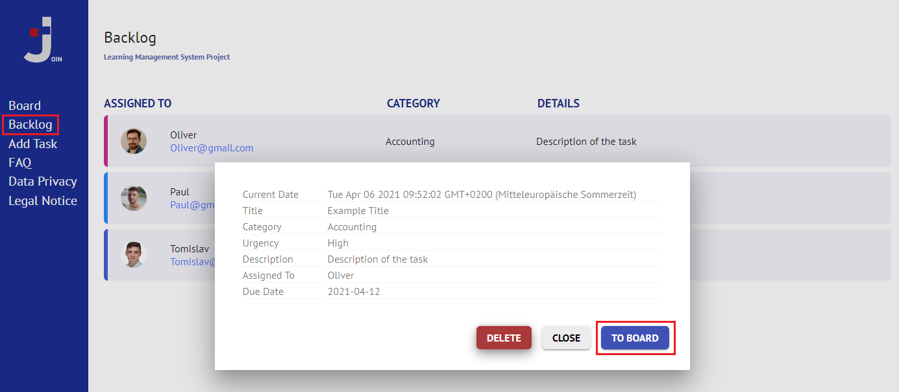
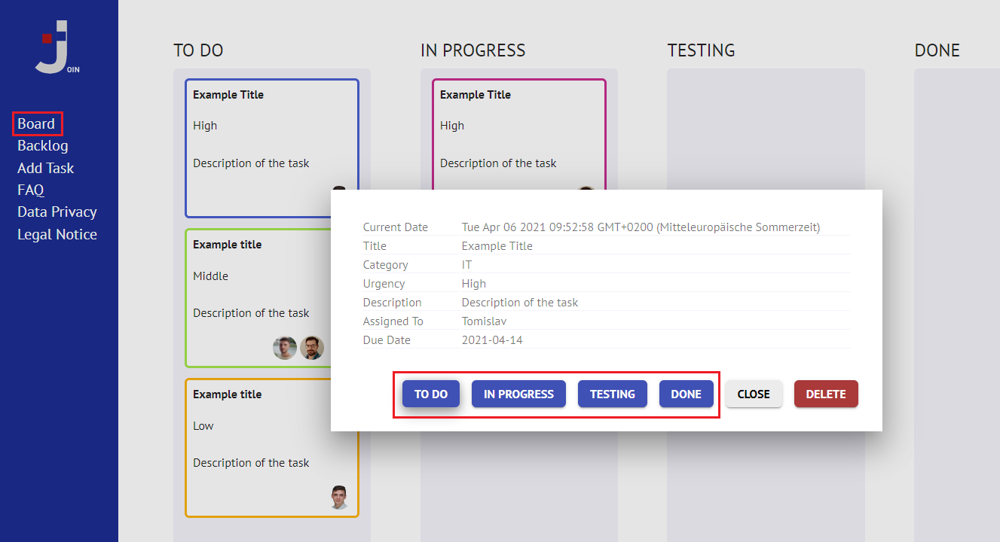

Join is a group project from three students of Developer Akademie.
It was developed with HTML, CSS and Javascript. The idea of Join is based on a kanban
board.
What is kanban?
Kanban is a Japanese project management method for creating and distributing tasks
efficiently by pulling and pushing tasks.
What is the functionality of a kanban board?
A kanban board is a graphical user interface for living the kanban principle.
At first, you create a ticket with all relevant information and store it in the
backlog.
When your team members and you want to start to work on the task, you can push it to the
board.
The task goes through four states: to do, in progress, testing and done.
Every team member can see the task's working status and push it to the next state until
it's
done.
What is a task and how can I create one?
A task is an independent work package which can be done by one or more team members in
an
appropriate time slot.
Press "Add Task" at the navigation bar to see the graphical user interface. Fill out the
form input fields (title, description), select a category as well as the urgency of the
task
and define the date by which the task should be done. You can assign the task to one or
more team members by clicking on the
button, checking the member's checkboxes and
pressing the
button.
Finally, create the task by pressing the
button.
What is the functionality of the backlog?
The backlog is a store where all created tasks wait before they will be pushed to the
board
and
team members can work on it.
It is like a storage for all the things you want to add throughout the whole project but
are not pushed to the board already.
How can I push a task from backlog to board?
In order to push a task from backlog to board just click on the relevant task container.
A
dialog will open with more detailed information about the task.
There you can find the
button. Just press it and the task will be located on the board from now on.

How can I push a task on the board to the next or previous level?
In order to push a task on the board to one of the next (or previous) levels just click
on the
relevant task.
A
dialog will open with more detailed information about the task.
Among others, you can find the four buttons
,
,
and
.
Press
one of them and the task will change its position on the board immediately. If you
use a non-mobile device you can push a task also via drag and drop. Just press and hold
down your left mouse
button on the task you want to move. Drag it to one of the other columns and
finally release the button.

What do the four different levels on the board mean?
TO DO: Tasks which are located in the to-do section have been pushed from
the
backlog.
Tasks in the to-do-section are supposed to be worked on soon, so no team member
has been working on the task yet.
IN PROGRESS: Tasks which are located in the in-progress section are
handled
by one or more team members right now.
TESTING: Tasks which are located in the testing section have already
been
handled by one or more team members.
They are ready to be tested in order to recognize bugs or rethink functionality
in
need of improvement.
The most efficient way for testing is when the testers are not people who have been working on the task.
If everything is fine with the task, it can be pushed to the done section.
Otherwise, it can be pushed back to the previous level "in progress" for
reworking.
DONE: Tasks which are located in the done section have been successfully
handled, tested and are finished.
Why do my tasks have different colors and what do they mean?
In the backlog and on the board every task has a specific color. Every color stands for a
category (e.g. department/division) which is defined when creating a new task.
Therefore, team members can recognize faster if the task is within their area of
expertise
and accordingly relevant for them to be handled.
How can I delete a task?
In order to delete a task, just click on the relevant task in the backlog or on the
board. A
new dialog will open with more detailed information about the task.
Just press the
button and your task will finally be deleted.